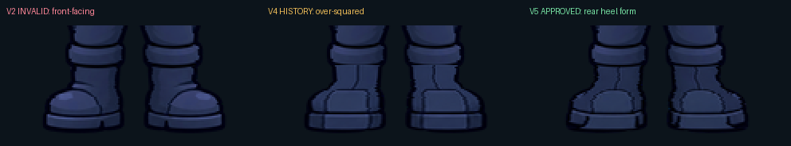
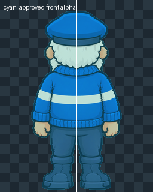

Approved front authority

Frank approved the first rear-boot render on 13 October 2026: “They don't look like toe caps, they are excellent. Approved.” V5 records that exact source without regeneration.
Approved orientation: rounded rear heel-counter panels, central vertical back seams, heel backs and rear sole edges. These are intentional rear-boot forms, not toe caps.


d1d409f098a18883f419633def910b4f2fef108337b6b9aff49ac356704ebf86
This 1122 × 1402 file is the exact first edit Frank approved and the rendering-quality authority. It is not a pixel-art asset. The 256 × 320 orthographic endpoint is a registered measurement/export proxy produced with Lanczos resampling; its complete anti-aliased outer alpha edge is byte-identical to the approved Prime front.



Superseded; retained as provenance.


0 of 81,920 alpha values differ, including every partially transparent anti-aliased edge pixel. Rows 0–272 remain byte-identical to V2; 3,691 pixels change only within rows 273–315. Rough full-resolution renders, nearest-neighbour master resampling and jagged internal linework are approval blockers even when geometry passes.
This approved front/back pair now authorizes KP Rig V1 construction. The selected side remains blocked at 5/15 exact horizontal datums and will be the first endpoint corrected from the rig. No raw/runtime sprite, animation strip or manifest has changed.